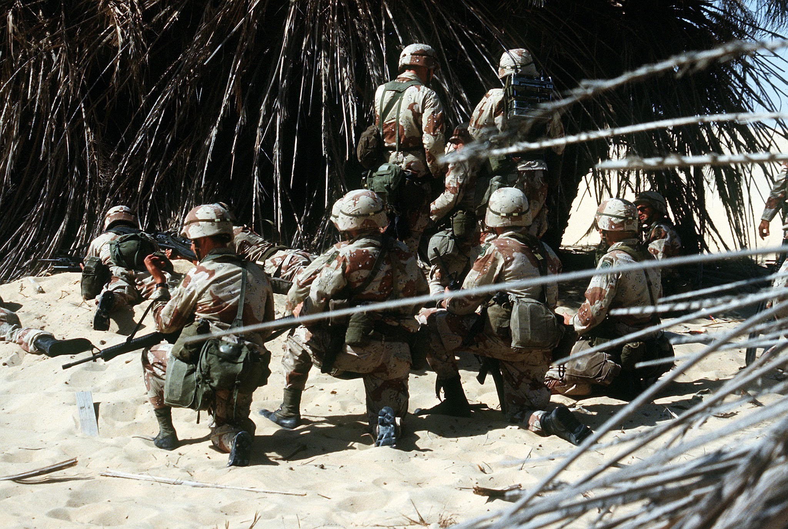
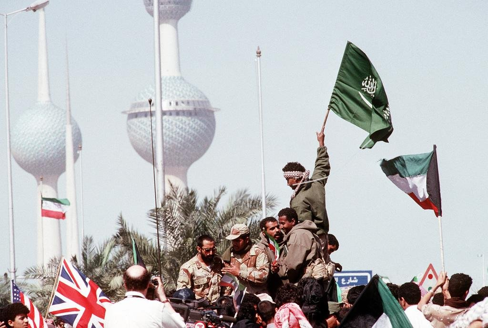

1979–1991
1979–1991: Revolution, Regional War, and Kuwait
24Iranian Revolution, 1979
The Shah's regime faced rising opposition from religious activists, secular nationalists, leftist groups, students, and other political and social movements. Grievances involved political repression, inequality, corruption, foreign influence, and the consequences of rapid modernization. Demonstrations and strikes intensified in 1978. The Shah departed in January 1979, Khomeini returned in February, and the monarchy collapsed. U.S. military and diplomatic support for the Shah had made Washington closely associated with the old order. The 1953 coup was part of the political memory of foreign interference, though it was not the sole cause of the revolution.

The revolution demonstrated that a strategically useful government might lack domestic legitimacy. American support for the Shah did not ensure long-term stability. It also illustrates regional agency: Iranian movements and political actors brought about a revolution despite Washington's interests.
25Hostage crisis, 1979–1981
Iranian students seized the American embassy in Tehran on November 4, 1979 after the Shah's admission into the United States for medical treatment amid fears of renewed intervention. The crisis lasted 444 days, until January 20, 1981. American diplomats' detention violated international diplomatic protections. For Americans it was a major security crisis; for some revolutionaries the embassy symbolized feared U.S. influence. Explaining these motives does not justify hostage taking. The crisis demonstrates how memories of foreign interference could affect relationships long after the original policy.
26Carter Doctrine, 1980
After the Soviet invasion of Afghanistan in December 1979, Carter declared in January 1980 that outside attempts to dominate the Persian Gulf would threaten vital U.S. interests and could be resisted by military force. The doctrine explicitly connected the Gulf's political order and strategic geography to U.S. national security. Protection against domination and pursuit of American interests were now publicly fused. Afghanistan belongs to the broader regional strategic context and should not be treated as geographically identical to the Arab Middle East.
27Iran–Iraq War, 1980–1988
Iraq invaded Iran in September 1980, expecting to exploit revolutionary instability and gain territorial and political advantage. Eight years of conflict inflicted enormous casualties and included missiles, attacks on shipping, and Iraq's chemical weapons use. U.S. policymakers worried about Iranian revolutionary influence, Iraqi expansion, the regional balance of power, and petroleum routes. Washington moved toward a tilt to Iraq in several respects while secret Iran–Contra arms dealings also exposed tensions within American policy. The aim of preventing one state from dominating the Gulf complicated any consistent application of political values. Iraq ended the war heavily indebted and militarized, contributing to tensions preceding the Kuwait invasion.
28Iraq invades Kuwait, August 2, 1990
Iraq's invasion followed disputes over debt, oil output, and territory. Iraqi forces occupied Kuwait and subsequently declared annexation. The UN Security Council adopted Resolution 660 condemning the invasion and demanding immediate withdrawal. The United States assembled a multinational coalition including Arab states, while Saudi Arabia hosted forces for Operation Desert Shield. This was an invasion of an internationally recognized sovereign state, sharply different from Iran's domestic crisis in 1953.
29Desert Shield and Desert Storm, 1990–1991
U.S. forces deployed to Saudi Arabia to deter further Iraqi expansion, while international sanctions and diplomacy sought withdrawal. Security Council Resolution 678 authorized force under specified conditions if Iraq did not comply by January 15, 1991. Coalition air attacks began in January, the ground offensive began in February, and Kuwait was liberated by February 28. U.S. motivations included restoring sovereignty, opposing aggression, safeguarding Saudi Arabia, and preventing a hostile Iraqi concentration of regional power. These motives could reinforce rather than cancel each other.

Kuwait was a monarchy, and restoring its territorial sovereignty did not automatically democratize its political system. The coalition also caused military, civilian, and environmental destruction; subsequent sanctions and Iraq policy remained contested.
30The core comparison: Iran 1953 and Kuwait 1991
Iran 1953: U.S. covert activity contributed to removing a prime minister during a constitutional and political crisis. Strategic calculations trumped noninterference in domestic political affairs.

Kuwait 1991: a U.S.-led coalition helped reverse interstate aggression, restoring an occupied state's territorial sovereignty while furthering American regional goals.
They differed in legal basis, scale, local participants, and political context. Their significance lies not in their being identical but in showing how national interests could drive either intervention against domestic self-government or military action in defense of state independence.